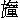

倦壓鰲頭請左符，笑尋頳尾為西湖。
二三賢守去非遠，六一清風今不孤。
四海共知霜鬓滿，重陽曾插菊花無？
聚星堂上誰先到？欲傍金尊倒玉壺。
這一首詩，乃宋朝士大夫劉季孫《寄蘇子瞻自翰苑出守杭州》詩。元來東坡先生蘇學士凡兩次到杭州：先一次，神宗皇帝熙寧二年，通判杭州；第二次，元佑年中，知杭州軍州事。所以臨安府多有東坡古跡詩句。後來南渡過江，文章之士極多。惟有洪內翰才名，可繼東坡之作。洪內翰曾編了《夷堅》三十二志，有一代之史才。在孝宗朝，聖眷甚隆。因在禁林，乞守外郡，累次上章，聖上方允，得知越州紹興府。是時淳熙年上，到任時遇春天。有首回文詩，做得極好，乃詩人熊元素所作。詩云：
融融日煖乍晴天，駿馬雕鞍繡轡聯。
風細落花紅襯地，雨微垂柳綠拖煙，
茸鋪草色春江曲，雪剪花梢玉砌前。
同恨此時良會罕，空飛巧燕舞翩翩。
若倒轉念時，又是一首好詩：
翩翩舞燕巧飛空，罕會良時此恨同。
前砌玉梢花剪雪，曲江春色草鋪茸。
煙拖綠柳垂微雨，地襯紅花落細風。
聯轡繡鞍雕馬駿，天睛乍煖日融融。
這洪內翰遂安排筵席於鎮越堂上，請眾官宴會。那四司六局秪應供過的人都在堂下，甚次第。當日果獻時新，食烹異味。酒至三杯，眾妓中有一妓，姓王，名英。這王英以纖纖春筍柔荑，捧著一管纏金絲龍笛，當筵品弄一曲。吹得清音嘹亮，美韻悠揚，眾官聽之大喜。這洪內翰令左右取文房四寶來，諸妓女供侍於面前，對眾官乘興，一時文不加點，掃一隻詞，喚做《虞美人》。詞云：
忽聞碧玉楼頭笛，聲透晴空碧。宮、商、角、羽任西東，映我奇觀驚起碧潭龍。數聲嗚咽青霄去，不捨《梁州序》。穿雲裂石響無蹤，驚動梅花初謝玉玲瓏。
洪內翰珠璣滿腹，錦繡盈腸，一隻曲兒，有甚難處？做了呈眾官。眾官看罷，皆喜道：「語意清新，果是佳作。」
方纔誇羨不已，只見一個官員，在眾中呵呵大笑，言曰：「學士作此龍笛詞，雖然奇妙，此詞八句，偷了古人作的雜詩、詞中各一句也。」洪內翰看那官人，乃孔通判，諱德明。洪內翰大驚道：「孔丈既知如此，可望見教否？」孔通判乃就筵上，從頭一一解之。
第一句道：「忽聞碧玉楼頭笛。」偷了張紫微作《道隱》詩中第四句。詩道：
試問清軒可煞青，霜天孤月照蓬瀛。
廣寒宮裡琴三弄，碧玉楼頭笛一聲。
金井轆轤秋水冷，石牀茅舍暮雲清。
夜來忽作瑤池夢，十二闌干獨步行。
第二句道：「聲透晴空碧。」偷了駱解元作《王嬌姿唱詞》中第三句。詩道：
謝氏筵中聞雅唱，何人隔幕在簾帷？
一聲點破睛空碧，遏住行雲不敢飛。
第三句道：「宮、商、角、羽任西東。」偷了曹仙姑作《風響》詩中第二句。詩道：
碾玉懸絲掛碧空，宮、商、角、羽任西東。
依稀似曲纔堪聽，又被風吹別調中。
第四句道：「映我奇觀驚起碧潭龍。」偷了東坡作《櫓》詩中第三、第四句。詩道：
伊軋江心激箭衝，天涯無際去無蹤。
遙遙映我奇觀處，料應驚起碧潭龍。
過處第五句道：「數聲嗚咽青霄去。」偷了朱淑真作《雁》詩中第四句。詩道：
傷懷遣我腸千縷，征雁南來無定據。
嘹嘹嚦嚦自孤飛，數聲嗚咽青霄去。
第六句道：「不捨《梁州序》。」偷了秦少游作《歌舞》詩中第四句。詩道：
纖腰如舞態，歌韻如鶯語。
似錦罩廳前，不捨《梁州序》。
第七句道：「穿雲裂石響無蹤。」偷了劉兩府作《水底火炮》詩中第三句。詩道：
一激轟然如霹靂，萬波鼓動魚龍息。
穿雲裂石響無蹤，卻虜驅邪歸正直。
臨了第八句道：「驚動梅花初謝玉玲瓏。」偷了士人劉改之來謁見婺州陳侍郎作《元宵望江南》詞中第四句。詞道：
元宵景，天氣正融融。柳線正垂金落索，梅花初謝玉玲瓏。明月映高空。賢太守，歡樂與民同。簫鼓聒殘燈火市，輪蹄踏破廣寒宮。良夜莫匆匆。
孔通判從頭解說罷，洪內翰大喜！眾官稱嘆道：「奇哉！奇哉！」洪內翰教左右別辦一勸。勸罷，與孔通判道：「適間門下解說得甚妙，甚妙！欲求公作《龍笛》詞一首，永為珍賜。」孔通判相謝罷，遂作一詞，喚做《水調歌頭》。詞云：
玉人揎皓腕，纖手映朱唇。龍吟越調孤噴，清濁最堪聽。欲度寧王一曲，莫學桓伊三弄，聽答兀中丁。憶昔知音客，鑒別在柯亭。至更深，宜月朗，稱疏星。天高氣爽，霜重水綠與山青。幸遇良宵佳景，轟起一聲蘄州，耳畔覺泠泠。裂石穿雲去，萬鬼盡潛形。
兀的正是：
高才得見高才客，不枉留傳紀好音。
說話的，你因甚的，頭回說這「八難龍笛詞」？自家今日不說別的，說兩個客人將一對龍笛蘄材，來東峰東岱嶽燒獻。只因燒這蘄材，卻教鄭州奉寧軍一個上廳行首，有分做兩國夫人，嫁一個好漢，後來為當朝四鎮令公，名標青史，直到如今，做幾回花錦似話說。這未發跡的好漢，卻姓甚名誰？怎地發跡變泰？直教：
縱橫宇宙三千里，威鎮華夷四百州。
有一詩，單道五代興亡，詩云：
自從唐季墜朝綱，天下生靈被擾攘。
社稷安危懸卒伍，朝廷輕重繫藩方。
深冬寒木固不脫，未旦小星猶有光。
五十三年更五姓，始知迅掃待真王。
卻說是五代唐朝裡，有兩個客人：王一太，王二太，乃兄弟兩人。獲得一對蘄州出的龍笛材，不曾開成笛，天生奇異，根似龍頭之狀，世所無者。特地將來兗州奉符縣東峰東岱嶽殿下火池內燒獻。燒罷，聖帝賜與炳靈公。炳靈公遂令康、張二聖前去鄭州奉寧軍，喚開笛閻招亮來。康、張二聖領命，即時到鄭州，變做兩個凡人，逕來見閻招亮。這閻招亮正在門前開笛，只見兩個人來相揖。作揖罷，道：「一個官員，有兩管龍笛蘄材，欲請待詔便去開則個。這官員急性，開畢重重酬謝，便等同去。」閻招亮即時收拾了作仗，廝趕二人來。頃刻間，到一個所在。閻招亮擡頭看時，只見牌上寫道：「東峰東岱嶽。」但見：
群山之祖，五嶽為尊。上有三十八盤，中有七十二司。水簾映日，天柱插空。九間大殿，瑞光罩碧瓦凝煙；四面高峰，偃仰見金龍吐霧。竹林寺有影無形，看日山藏真隱聖。
閻招亮理會不下。康、張二聖相引去，參拜了炳靈公。將至一閣子內，已安蘄材在桌上，教閻招亮就此開笛。吩咐道：「此乃陰間，汝不可遠去。倘行遠失路，難以回歸。」吩咐畢，二聖自去。
招亮片時開成龍笛。吹其聲，清幽可愛。等半晌，不見康、張二聖來。招亮默思量起：「既到此間，不去看些所在，也須可惜。」遂出閣子來。行不甚遠，見一座殿宇。招亮走至廊下，聽得靜鞭聲急，遂去窗縫裡偷眼看時，只見：
蝦鬚簾卷，雉尾扇開。冕旒升殿，一人端拱坐中間；簪笏隨朝，眾聖趨蹡分左右。金鐘響動，玉磬聲頻。悠揚天樂五雲間，引領百神朝聖帝。
聖帝降輦升殿，眾神起居畢。傳聖旨：「押過公事來。」只見一個漢，項戴長枷，臂連雙杻，推將來。閻招亮肚裡道：「這個漢，好面熟！」一時間，急省不起他是兀誰。再傳聖旨，令押去換銅膽鐵心；卻令回陽世，為四鎮令公，告戒：「切勿妄殺人命。」招亮聽得，大驚。忽然一鬼吏喝道：「凡夫怎得在此偷看公事？」當時，閻招亮聽得鬼吏叫，急慌走回，來開笛處閣子裡坐地。良久之間，康、張二聖，來那閣子裡來。見開笛了，同招亮將龍笛來呈。吹其笛，聲清韻長。炳靈公大喜道：「教汝福上加福，壽上加壽。」招亮告曰：「不願加其福壽。招亮有一親妹閻越英，見為娼妓。但求越英脫離風塵，早得從良，實所願也。」炳靈公道：「汝有此心，乃凡夫中賢人也，當令汝妹嫁一四鎮令公。」招亮拜謝畢，康、張二聖送歸。行至山半路高險之處，指招亮看一去處。正看裡，被康、張二聖用手打一推，攧將下峭壁巖裡去。閻待詔吃一驚，猛閃開眼，卻在屋裡牀上，渾家和兒女都在身邊。問那渾家道：「做甚的你們都守著我眼淚出？」渾家道：「你前日在門前正做生活裡，驀然倒地，便死去。摸你心頭時，有些溫，扛你在牀上兩日。你去下世做甚的來？」招亮從康、張二聖來叫他去許多事，一一都說。屋裡人見說，盡皆駭然。自後過了幾時，沒話說。
時遇冬間，雪降長空，石信道有一首《雪》詩，道得好：
六出飛花夜不收，朝來佳景有宸州。
重重玉宇三千界，一一瓊臺十二樓。
庾嶺寒梅何處放？章臺飛絮幾時休？
還思碧海銀蟾畔，誰駕丹山碧鳳游？
其雪轉大。閻待詔見雪下，當日手冷，不做生活，在門前閑坐地。只見街上一個大漢過去。閻待詔見了，大驚道：「這個人，便是在東嶽換銅膽鐵心未發跡的四鎮令公，卻打門前過去。今日不結識，更待何時？」不顧大雪，撩衣大步趕將來。不多幾步，趕上這大漢。進一步，叫道：「官人拜揖。」那大漢卻認得閻招亮是開笛的，還個喏，道：「待詔沒甚事？」閻待詔道：「今日雪下，天色寒冷。見你過去，特趕來相請，同飲數杯。」便拉入一個酒店裡去。這個大漢，姓史，雙名弘肇，表字化元，小字憨兒。開道營長行軍兵。按《五代史》本傳上載道：「鄭州榮澤人也。為人驍勇，走及奔馬。」酒罷，各自歸家。
明日，閻待詔到妹子閻越英家，說道：「我昨日見一個人來，今日特地來和你說。我多時曾死去兩日，東嶽開龍笛。見這個人換了銅膽鐵心，當為四鎮令公，道令你嫁這四鎮令公。我日多時，只省不起這個人。昨日忽然見他，我請他吃酒來。」閻越英問道：「是兀誰？」閻招亮接口道：「是那開道營有情的史大漢。」閻越英聽得說是他，好場惡氣：「我元來合當嫁這般人？我不信！」
自後閻待詔見史弘肇，須買酒請他。史大漢數次吃閻待詔酒食。一日，路上相撞見，史弘肇遂請閻招亮去酒店裡，也吃了幾多酒共食。閻待詔要還錢，史弘肇那裡肯：「相擾待詔多番，今日特地還席。」閻招亮相別了，先出酒店自去。史弘肇看著量酒道：「我不曾帶錢來，你廝趕我去營裡討還你。」量酒只得隨他去。到營門前，遂吩咐道：「我今日沒一文，你且去。我明日自送來，還你主人。」量酒廝 帶道：「歸去吃罵，主人定是不肯。」史大漢道：「主人不肯後要如何？你會事時，便去；你若不去，敬你吃頓惡拳。」量酒沒奈何，只得且回。
這史弘肇卻走去營門前賣樣糜王公處，說道：「大伯，我欠了店上酒錢，沒得還。你今夜留門，我來偷你鍋子。」王公只當做耍話，歸去和那大姆子說：「世界上不曾見這般好笑，史憨兒今夜要來偷我鍋子，先來說，教我留門。」大姆子見說，也笑。當夜二更三點前後，史弘肇真個來推大門。力氣大，推折了門閂。走入來，兩口老的聽得。大姆子道：「且看他怎地？」史弘肇大驚小怪，走出灶前，掇那鍋子在地上，道：「若還破後，難折還他酒錢。」拿條棒敲得噹噹響。掇將起來，反轉覆在頭上。不知那鍋底裡有些水，澆了一頭一臉，和身上都濕了。史弘肇那裡顧得乾濕，戴著鍋兒便走。王公大叫：「有賊！」披了衣服趕將來。地方聽得，也趕將來。史弘肇吃趕得慌，撇下了鍋子，走入一條巷去躲避。誰知築底巷，卻走了死路。鬼慌盤上去人家蕭牆，吃一滑，攧將下去。地方也趕入巷來，見他攧將下去。地方叫道：「閻媽媽，你後門有賊，跳入蕭牆來。」閻行首聽得，教妳子點蠟燭去來看時，卻不見那賊，只見一個雪白異獸：
光閃爍渾疑素練，貌猙獰恍似堆銀。遍身毛抖擻九秋霜，一條尾搖動三尺雪。流星眼爭閃電，巨海口露血盆。
閻行首見了，吃一驚。定睛再看時，卻是史大漢彎跧蹲在東間邊。見了閻行首，失張失志，走起來唱個喏。這閻行首先時見他異相，又曾聽得哥哥閻招亮說道他有分發跡，又道我合當嫁他，當時不叫地方捉將去，倒教他入裡面藏躲。地方等了一餉，不聽得閻行首家裡動靜。想是不在了，各散去訖。閻行首開了前門，放史弘肇出去。
當夜過了。明日飯後，閻行首教人去請哥哥閻待詔來。閻行首道：「哥哥，你前番說史大漢有分發跡，做四鎮令公；道我合當嫁他，我當時不信你說。昨夜後門叫有賊，跳入蕭牆來。我和妳子點蠟燭去照，只見一隻白大蟲蹲在地上。我定睛再看時，卻是史大漢。我看見他這異相，必竟是個發跡的人。我如今情願嫁他。哥哥，你怎地做個道理，與我說則個？」閻招亮道：「不妨，我只就今日，便要說成這頭親。」閻待詔知道史弘肇是個發跡變泰底人，又見妹子又嫁他，肚裡好歡喜，一逕來營裡尋他。史弘肇昨夜不合去偷王公鍋子，日裡先少了酒錢，不敢出門，閻待詔尋個恰好！遂請他出來，和他說道：「有頭好親，我特來與你說。」史弘肇道：「說甚麼親？」閻待詔道：「不是別人，是我妹子閻行首。他隨身有若干房財，你意下如何？」史弘肇道：「好便好，只有三件事，未敢成這頭親。」閻招亮道：「有那三件事？但說不妨。」史弘肇道：「第一，他家財由吾使；第二，我入門後，不許再著人客；第三，我有一個結拜的哥哥，並南來北往的好漢，若來尋我，由我留他飲食宿臥。如依得這三件事，可以成親。」閻招亮道：「既是我妹子嫁你了，是事都由你。」當日說成這頭親，回復了妹子，兩相情願了。料沒甚下財納禮，揀個吉日良時，到做一身新衣服，與史弘肇穿著了，招他歸來成親。
約過了兩個月，忽上司指揮差往孝義店，轉遞軍期文字。史弘肇到那孝義店，過未得一個月，自押鋪已下，皆被他無禮過。只是他身邊有這錢肯使，捨得買酒請人，因此人都讓他。忽一日，史弘肇去鋪屋裡睡。押鋪道：「我沒興添這厮來蒿惱人。」正埋冤哩，只見一個人面東背西而來，向前與押鋪唱個喏，問道：「有個史弘肇可在這裡？」押鋪指著道：「見在那裡睡。」只因這個人來尋他，有分教史弘肇發跡變泰。這來底人姓甚名誰？正是：
兩腳無憑寰海內，故人何處不相逢。
這個來尋史弘肇的人，姓郭，名威，表字仲文，邢州堯山縣人。排行第一，喚做郭大郎。怎生模樣？
擡左腳，龍盤淺水；擡右腳，鳳舞丹墀。紅光罩頂，紫霧遮身。堯眉舜目，禹背湯肩。除非天子可安排，以下諸侯壓不得。
這郭大郎因在東京不如意，曾撲了潘八娘子釵子。潘八娘子看見他異相，認做兄弟；不教解去官司，倒養在家中，自好了。因去瓦裡看，殺了構欄裡的弟子，連夜逃走。走到鄭州，來投奔他結拜兄弟史弘肇。到那開道營前，問人時，教來孝義店相尋。當日，史弘肇正在鋪屋下睡著，押鋪遂叫覺他來道：「有人尋你，等多時。」史弘肇焦躁，走將起來，問：「兀誰來尋我？」郭大郎便向前道：「吾弟久別，且喜安樂。」史弘肇認得是他結拜的哥哥，撲翻身便拜。拜畢，相問動靜了。史弘肇道：「哥哥，你莫向別處去，只在我這鋪屋下，權且宿臥。要錢盤纏，我家裡自討來使。」眾人不敢道他甚的，由他留這郭大郎在鋪屋裡宿臥。郭大郎那裡住得幾日， 史弘肇無禮上下。兄弟兩人在孝義店上，日逐趁賭，偷雞盜狗，一味乾顙不美，蒿惱得一村疃人過活不得。沒一個人不嫌，沒一個人不罵。
話分兩頭。卻說後唐明宗歸天，閔帝登位。應有內人，盡令出外嫁人。數中有掌印柴夫人，理會得些個風雲氣候，看見旺氣在鄭州界上，遂將帶房奩，望旺氣而來。來到孝義店王婆家安歇了，要尋個貴人。柴夫人住了幾日，看街上往來之人，皆不入眼。看著王婆道：「街上如何直恁地冷靜？」王婆道：「覆夫人，要熱鬧容易。夫人放買市，這經紀人都來趕趁，街上便熱鬧。」夫人道：「婆婆也說得是。」便教王婆四下說教人知：「來日柴夫人買市。」
郭大郎兄弟兩人聽得說，商量道：「我們何自撰幾錢買酒吃？明朝賣甚的好？」史弘肇道：「只是賣狗肉。問人借個盤子和架子、砧刀，那裡去偷隻狗子，把來打殺了，煮熟去賣，卻不須去上行。」郭大郎道：「只是坊佐人家，沒這狗子；尋常被我們偷去煮吃盡了，近來都不養狗了。」史弘肇道：「村東王保正家有隻好大狗子，我們便去對付休。」兩個逕來王保正門首，一個引那狗子，一個把條棒，等他出來，要一棒捍殺打將去。王保正看見了，便把三百錢出來道：「且饒我這狗子，二位自去買碗酒吃。」史弘肇道：「王保正，你好不近道理！偌大一隻狗子，怎地只把三百錢出來？須虧我。」郭大郎道：「看老人家面上，胡亂拿去罷。」兩個連夜又去別處偷得一隻狗子，撏剝乾淨了，煮得稀爛。
明日，史弘肇頂著盤子，郭大郎駝著架子，走來柴夫人幕次前，叫聲：「賣肉。」放下架子，閣那盤子在上。夫人在簾子裡看見郭大郎，肚裡道：「何處不覓？甚處不尋？這貴人卻在這裡。」使人從把出盤子來，教簇一盤。郭大郎接了盤子，切那狗肉。王婆正在夫人身邊，道：「覆夫人，這個是狗肉，貴人如何吃得？」夫人道：「買市為名，不成要吃？」教管錢的支一兩銀子與他。郭大郎兄弟二人接了銀子，唱喏謝了自去。
少間，買市罷。柴夫人看著王婆道：「問婆婆，央你一件事。」王婆道：「甚的事？」夫人道：「先時賣狗的兩個漢子，姓甚的？在那裡住？」王婆道：「這兩個最不近道理。切肉的姓郭，頂盤子姓史，都在孝義坊鋪屋下睡臥。不知夫人問他兩個，做甚麼？」夫人說：「奴要嫁這一個切肉姓郭的人，就央婆婆做媒，說這頭親則個。」王婆道：「夫人偌大個貴人，怕沒好親得說，如何要嫁這般人？」夫人道：「婆婆莫管，自看見他是個發跡變泰的貴人，婆婆便去說則個。」王婆既見夫人恁地說，即時便來孝義店鋪屋裡，尋郭大郎，尋不見。押鋪道：「在對門酒店裡吃酒。」王婆逕過來酒店門口，揭那青布簾，入來見了他弟兄兩個，道：「大郎，你卻吃得酒下！有場天來大喜事，來投奔你，劃地坐得牢裡！」郭大郎道：「你那婆子，你見我撰得些個銀子，你便來要討錢。我錢卻沒與你，要便請你吃碗酒。」王婆便道：「老媳婦不來討酒吃。」郭大郎道：「你不來討酒吃，要我一文錢也沒。你會事時，吃碗了去。」史弘肇道：「你那婆子，忒不近道理！你知我們性也不好，好意請你吃碗酒，你卻不吃。一似你先時破我的肉是狗肉，幾乎教我不撰一文，早是夫人教買了。你好羞人，兀自有那面顏來討錢！你信道我和酒也沒，索性請你吃一頓拳踢去了。」王婆道：「老媳婦不是來討酒和錢。適來夫人問了大郎，直是歡喜，要嫁大郎，教老媳婦來說。」郭大郎聽得說，心中大怒，用手打王婆一個漏掌風。王婆倒在地上道：「苦也！我好意來說親，你卻打我！」郭大郎道：「兀誰調發你來廝取笑！且饒你這婆子，你好好地便去，不打你。他偌大個貴人，卻來嫁我？」
王婆鬼慌，走起來，離了酒店，一逕來見柴夫人。夫人道：「婆婆說親不易。」王婆道：「教夫人知，因去說親，吃他打來。道老媳婦去取笑他。」夫人道：「帶累婆婆吃虧了。沒奈何，再去走一遭。先與婆婆一隻金釵子，事成了，重重謝你。」王婆道：「老媳婦不敢去。再去時，吃他打殺了，也沒人勸。」夫人道：「我理會得。你空手去說親，只道你去取笑他；我教你把這件物事將去為定，他不道得不肯。」王婆問道：「卻是把甚麼物事去？」夫人取出來，教那王婆看了一看，諕殺那王婆。這件物，卻是甚的物？
君不見張負有女妻陳平，家居陋巷席為門。門外多逢長者轍，丰姿不是尋常人。又不見單父呂公善擇婿，一事樊侯一劉季。風雲際會十年間，樊作諸侯劉作帝。從此英名傳萬古，自然光彩生門戶。君看如今嫁女家，只擇高樓與豪富。
夫人取出定物來，教王婆看，乃是一條二十五兩金帶。教王婆把去，定這郭大郎。王婆雖然適間吃了郭大郎的虧，凡事只是利動人心，得了夫人金釵子，又有金帶為定，便忍腳不住。即時提了金帶，再來酒店裡來。
王婆路上思量道：「我先時不合空手去，吃他打來。如今須有這條金帶，他不成又打我？」來到酒店門前，揭起青布簾，他兄弟兩個，兀自吃酒未了。走向前，看著郭大郎道：「夫人教傳語，恐怕大郎不信，先教老媳婦把這條二十五兩金帶來定大郎，卻問大郎討回定。」郭大郎肚裡道：「我又沒一文，你自要來說，是與不是，我且落得拿了這條金帶，卻又理會。」當時叫王婆且坐地，叫酒保添隻盞來，一道吃酒。吃了一盞酒，郭大郎覷著王婆道：「我那裡來討物事做回定？」王婆道：「大郎身邊胡亂有甚物，老媳婦將去，與夫人做回定。」郭大郎取下頭巾，除下一條鏖糟臭油邊子來，教王婆把去做回定。王婆接了邊子，忍笑不住，道：「你的好省事！」王婆轉身回來，把這邊子遞與夫人。夫人也笑了一笑，收過了。
自當日定親以後，免不得揀個吉日良時，就王婆家成這親。遂請叔叔史弘肇，又教人去鄭州請嬸嬸閻行首來相見了。柴夫人就孝義店嫁了郭大郎，卻捲帳回到家中，住了幾時。夫人忽一日看著丈夫郭大郎道：「我夫若只在此相守，何時會得發跡？不若寫一書，教我夫往西京河南府，去見我母舅符令公，可求立身進步之計，若何？」郭大郎道：「深感吾妻之意。」遂依其言。柴夫人修了書，安排行裝，擇日教這貴人上路。
行時紅光罩體，坐後紫霧隨身。朝登紫陌，一條捍棒作朋儔；暮宿郵亭，壁上孤燈為伴侶。他時變豹貴非常，今日權為途路客。
這貴人，路上離不得饑餐渴飲，夜住曉行。不則一日，到西京河南府，討了個下處。這郭大郎當初來西京，指望投奔符令公，發跡變泰。怎知道卻惹一場橫禍，變得人命交加。正是：
未酬奮翼衝霄志，翻作連天大地囚。
郭大郎到西京河南府看時，但見：
州名豫郡，府號河南。人煙聚百萬之多，形勢盡一時之勝。城池廣闊，六街內士女駢闐；井邑繁華，九陌上輪蹄來往。風傳絲竹，誰家別院奏清音？香散綺羅，到處名園開麗景。東連鞏縣，西接澠池，南通洛口之饒，北控黃河之險。金城繚繞，依稀似偃月之形；雉堞巍峨，仿佛有參天之狀。虎符龍節王候鎮，朱戶紅樓將相家。休言昔日皇都，端的今時勝地。正是：
春如紅錦堆中過，夏若青羅帳裡行。
郭大郎在安歇處過了一夜，明早，卻待來將這書去見符令公。猛自思量道：「大丈夫倚著一身本事，當自立功名；豈可用婦人女子之書，以圖進身乎？」依舊收了書，空手逕來衙門前招人牌下，等著部署李霸遇來投見他。李霸遇問道：「你曾帶得來麼？」貴人道：「帶得來。」李部署問：「是甚的？」郭大郎言：「是十八般武藝。」李霸遇所說，本是見面錢。見說十八般武藝，不是頭了，口裡答應道：「候令公出廳，教你參謁。」比及令公出廳，卻不教他進去。
自從當日起，日逐去俟候，擔閣了兩個來月，不曾得見令公。店都知見貴人許多日不曾見得符令公，多口道：「官人，你枉了日逐去俟候。李部署要錢，官人若不把與他，如何得見符令公？」貴人聽得說，怒從心上起，惡向膽邊生：「元來這賊，卻是如此！」
當日不去衙前俟候，悶悶不已，在客店前閑坐，只見一個撲魚的在門前叫撲魚，郭大郎遂叫住撲。只一撲，撲過了魚。撲魚的告那貴人道：「昨夜迫劃得幾文錢，買這魚來撲，指望贏幾個錢去養老娘。今日出來，不曾撲得一文；被官人一撲撲過了，如今沒這錢歸去養老娘。官人可以借這魚去，前面撲贏得幾個錢時，便把來還官人。」貴人見他說得孝順，便借與他魚去撲。吩咐他道：「如有人撲過，卻來說與我知。」撲魚的借得那魚去撲，行到酒店門前，只見一個人叫：「撲魚的在那裡？」因是這個人在酒店裡叫撲魚，有分郭大郎拳手相交，就酒店門前變做一個小小戰場。這叫撲魚的是甚麼人？
從前積惡欺天，今日上蒼報應。
酒店裡叫住撲魚的，是西京河南府部署李霸遇。在酒店裡吃酒，見撲魚的，遂叫入酒店裡去撲。撲不過，輸了幾文錢，徑硬拿了魚。撲魚的不敢和他爭，走回來，說向郭大郎道：「前面酒店裡，被人拿了魚，卻贏得他幾文錢，男女納錢還官人。」貴人聽得說，道：「是甚麼人？好不諳事！既撲不過，如何拿了魚？魚是我的，我自去問他討。」這貴人不去討，萬事俱休。到酒店裡看那人時，
仇人廝見，分外眼睜。
不是別人，卻是部署李霸遇。貴人一分焦躁變做十分焦躁，在酒店門前，看著李霸遇道：「你如何拿了我的魚？」李霸遇道：「我自問撲魚的要這魚，如何卻是你的？」貴人拍著手道：「我西京投事，你要我錢，擔閣我在這裡兩個來月，不教我見令公。你今日對我，有何理說？」李霸遇道：「你明日來衙門，我周全你。」貴人大罵道：「你這砍頭賊，閉塞賢路，我不算你，我和你就這裡比個大哥二哥！」
郭大郎先脫膊，眾人喊一聲。原來貴人幼時曾遇一道士，那道士是個異人，替他右項上刺著幾個雀兒，左項上刺幾根稻穀，說道：「若要富貴足，直待雀銜穀。」從此人都喚他是郭雀兒。到登極之日，雀與穀果然湊在一處。此是後話。這日郭大郎脫膊，露出花項，眾人喝采。正是：
近覷四川十樣錦，遠觀洛汭一團花。
李霸遇道：「你真個要廝打？你只不要走！」貴人道：「你莫胡言亂語，要廝打快來！」李霸遇脫膊，露出一身䩐䩐韃韃的橫肉，眾人也喊一聲。好似：生鐵鑄在火池邊，怪石鐫來墳墓畔。二人拳手廝打，四下人都觀看。一肘二拳，三翻四合，打到分際，眾人齊喊一聲，一個漢子在血濼裡臥地。當下卻是輸了兀誰？
作惡欺天在世間，人人背後把眉攢。
只知自有安身術，豈畏災來在目前？
郭大郎正打那李霸遇，直打到血流滿地。聽得前面頭踏指約，喝道：「令公來。」符令公在馬上，見這貴人紅光罩定，紫霧遮身，和李霸遇廝打。李霸遇那裡奈何得這貴人？符令公教手下人：「不要驚動，為我召來。」手下人得了鈞旨，便來好好地道：「兩人且莫廝打，令公鈞旨，教來府內相見。」二人同至廳下。符令公看這人時，生得：堯眉舜目，禹背湯肩。令公鈞旨，便問郭大郎道：「那裡人氏？因甚行打李霸遇？」貴人覆道：「告令公，郭威是邢州堯山縣人氏，遠來貴府投事。李霸遇要郭威錢，不令郭威參見令公鈞顏，擔閣在旅店兩月有餘。今日撞見，因此行打，有犯台顏。小人死罪，死罪！」符令公問道：「你既然遠來投奔，會甚本事？」郭大郎覆道：「郭威十八股武藝盡都通曉。」令公鈞旨，教李霸遇與郭威就當廳使棒。李霸遇先時已被這貴人打了一頓，奈何不得這貴人。覆令公道：「李霸遇使棒不得。適間被郭威暗算，打損身上。」令公鈞旨，定要使棒。郭威看著李霸遇道：「你道我暗算你？這裡比個大哥二哥！」二人把棒在手，唱了喏，部者喝教二人放對。
山東大擂，河北夾鎗。山東大擂，鰲魚口內噴來；河北夾鎗，昆侖山頭瀉出。三轉身，兩攧腳。旋風響，臥烏鳴。遮攔架隔，有如素練眼前飛；打齪支撐，不若耳邊風雨過。
兩人就在廳前使那棒，一上一下，一來一往，鬬不得數合，令公符彥卿在廳上看見，喝采不迭。
羊祜病中推杜預，叔牙囚里薦夷吾。
堪嗟四海英雄輩，若個男兒識大夫？
兩人就廳下使棒。李霸遇那裡奈何得這貴人？被郭大郎一棒打翻。符令公大喜！即時收在帳前，遂差這貴人做大部署，倒在李霸遇之上。郭大郎拜謝了令公，在河南府當職役。過了幾時，沒話說。
忽一日，郭部署出衙門閑幹事。行至市中，只見食店前一個官人，坐在店前大驚小怪，呼左右教打碎這食店。貴人一見，遂問過賣：「這官人因甚的在此喧鬨尋鬧？」過賣扯著部署在背後去告訴道：「這官人乃是地方中有名的尚衙內，半月前見主人有個女兒，十八歲，大有顏色。這官人見了一面，歸去教人來傳語道：『太夫人教請小娘子過來，說話則個。若是你家缺少錢物，但請見諭。』主人道：『我家豈肯賣女兒？只割捨得死！』尚衙內見主人不肯，今日來此掀打。」貴人見說，怒從心上起，惡向膽邊生。雄威動，鳳眼圓睜；烈性發，龍眉倒豎。兩條忿氣，從腳底板賃到頂門。心頭一把無明火，高三千丈，按捺不下。郭部署向前與尚衙內道：「凡人要存仁義，暗室欺心，神目如電。尊官不可以女色而失正道。郭威言輕，請尊官上馬若何？」衙內焦躁道：「你是何人？」貴人道：「姓郭，名威，乃是河南府符令公手下大部署。」衙內說：「各無所轄，焉能管我？左右，為我毆打這厮！」貴人大怒道：「我好意勸你，卻教左右打我，你不識我性！」用左手捽住尚衙內，右手就身邊拔出壓衣刀在手，手起刀落，尚衙內性命如何？
欲除天下不平事，方顯人間大丈夫。
郭部署路見不平，殺了尚衙內，一行人從都走。貴人逕來河南府內自首。符令公出廳，貴人覆道：「告令公，郭威殺了欺壓良善之賊，特來請罪。」符令公問了起末，喝左右取長枷枷了，押下司理院問罪。怎見得司理院的利害？
古名「廷尉」，亦號「推官」。果然是事不通風，端的底令人喪膽。龐眉節級，執黃荊儼似牛頭；努目押牢，持鐵索渾如羅剎。枷分三等，取勘情重情輕；牢眼四方，分別當生當死。風聲緊急，烏鴉鳴噪勘官廳；日影參差，綠柳遮籠蕭相廟。轉頭逢五道，開眼見閻王。
當日，那承吏王琇承了這件公事。罪人入獄，教獄子絣在廓上，一面勘問。不多時，符令公鈞旨，叫王琇來偏廳上。令公見王琇，遂吩咐幾句，又把筆去那桌子面上寫四字。王琇看時，乃是：「寬容郭威。」王琇道：「律有明條，領鈞旨。」令公焦躁，遂轉屏風入府堂去。王琇急慌，唱了喏，悶悶不已，逕回來司房，伏案而睡。見一條小赤蛇兒，戲於案上。王琇道：「作怪！」遂趕這蛇。急趕急走，慢趕慢走；趕到東乙牢，這蛇入牢眼去，走上貴人枷上，入鼻內從七竅中穿過。王琇看這個貴人時，紅光罩定，紫霧遮身。理會未下，就司房裡颯然睡覺。元來人困後，多是肚中不好了，有那與決不下的事，或是手頭窘迫，憂愁思慮。故「困」字著個「貧」字，謂之「貧困」；「愁」字，謂之「愁困」；「憂」字，謂之「憂困」；不成「喜困」、「歡困」。王琇得了這一夢，肚裡道：「可知符令公教我寬容他，果然好人識好人。」王琇思量半晌，只是未有個由頭出脫他。
不知這貴人直有許多攧撲：自幼便沒了親爹，隨母嫁潞州常家；後來因事離了河北，築築磕磕，受了萬千不易，甫能得符令公周全，做大部署；又去閒管事，惹這場橫禍。至夜，居民遺漏。王琇眉頭一縱，計從心上來。只就當夜，教這貴人出牢獄。當時王琇思量出甚計來？正是：
袖中伸出拿雲手，提起天羅地網人。
當夜黃昏後，忽居民遺漏。王琇急去稟令公，要就熱亂裡放了這貴人，只做因火獄中走了。令公大喜！元來令公日間已寫下書，只要做道理放他，遂付書與王琇。王琇接了書，來獄中疏了貴人戴的枷；拿頂頭巾，教貴人裹了；把符令公的書與貴人。吩咐道：「令公教你去汴京見劉太尉，可便去，不宜遲。」貴人得放出，火尚未滅。趁那撩亂之際，急走去部署房裡，收拾些錢物，當夜迤邐奔那汴京開封府路上來。
不則一日，到開封府，討了安歇處。明日早，逕往殿司衙門俟候下書。等候良久，劉太尉朝殿而回。只見：
青涼傘招颭如雲，馬領下珠纓拂火。
乃是侍衛親軍、左金吾衛、上將軍、殿前都指揮使劉知遠。貴人走向前，應聲喏，覆道：「西京符令公有書拜呈，乞賜台覽。」劉太尉教人接了書，陪入衙。劉大尉拆開書看了，教下書人來廳前參拜了。劉太尉見郭威生得清秀，是個發跡的人，留在帳前作牙將使喚，郭威拜謝訖。
自後過來得數日，劉太尉因操軍回衙，打從桑維翰丞相府前過。是日，桑維翰與夫人在看街裡，觀看往來軍民。劉知遠頭踏，約有三百餘人，真是威嚴可畏。夫人看著桑維翰道：「相公見否？」桑維翰道：「此是劉太尉」。夫人說：「此人威嚴若此，想官大似相公。」桑維翰笑曰：「此一武夫耳，何足道哉？看我呼至簾前，使此人鞠躬聽命。」夫人道：「果如是，妾當奉勸；如不應其言，相公當勸妾一杯酒。」桑維翰即時令左右呼召劉太尉，又令人安靴在簾裡，傳鈞旨趕上劉太尉，取覆道：「相公呼召太尉。」劉知遠隨即到府前下馬，至堂下躬身應喏。正是：
直饒百萬將軍貴，也須堂下拜靴尖。
劉太尉在堂下俟候，耽閣了半日，不聞鈞旨。桑維翰與夫人飲酒，忘了發付，又沒人敢去察覆。到晚，劉太尉只得且歸，到衙內焦躁道：「大丈夫功名，自以弓馬得之，今反被腐儒相侮。」到明日五更，至朝見處，見桑維翰下馬，入閤子裡去。劉知遠心中大怒：「昨日侮我，教我看靴尖唱喏，今日有何面目相見？」因此懷忿，在朝見處，有犯桑維翰。晉帝遂令劉知遠出鎮太原府。那裡是劉知遠出鎮太原府，則是那史弘肇合當出來，發跡變泰！正是：
特意種花栽不活，等閑攜酒卻成歡。
劉知遠出鎮太原府為節度使，日下朝辭出國門。擇了日，進發赴任。劉太尉先同帳下官屬，帶行親隨起發，前往太原府。留郭牙將在後，管押鈞眷。行李擔仗，當日起發。
朱旗颭颭，彩幟飄飄。帶行軍卒，人人腰跨劍和刀；將佐親隨，個個腕懸鞭與簡。晨雞啼後，束裝曉別孤村；紅日斜時，策馬暮登高嶺。經野市，過溪橋；歇郵亭，宿旅驛。早起看浮雲陪曉翠，晚些見落日伴殘霞。指那萬水千山，迤邐前進。劉知遠方行得一程，見一所大林：
幹聳千尋，根盤百里。掩映綠陰似障，槎牙怪木如龍。下長靈芝，上巢彩鳳。柔條微動，生四野寒風；嫩葉初開，鋪半天雲影。闊遮十里地，高拂九霄雲。
劉太尉方欲待過，只見前面走出一隊人馬，攔住路。劉太尉吃一驚，將為道是強人，卻待教手下將佐安排去抵敵。只見眾人擺列在前，齊唱一聲喏。為首一人稟覆道：「侍衛司差軍校史弘肇，帶領軍兵，接太尉節使上太原府。」劉知遠見史弘肇生得英雄，遂留在手下為牙將。史弘肇不則一日，隨太尉到太原府。後面鈞眷到，史弘肇見了郭牙將，撲翻身體便拜。兄弟兩人再廝見，又都遭際劉太尉，兩人為左右牙將。後因契丹滅了石晉，劉太尉起兵入汴，史、郭二人為先鋒，驅除契丹，代晉家做了皇帝，國號後漢。史弘肇自此直發跡，做到單、滑、宋、汴四鎮令公。富貴榮華，不可盡述。
碧油

擁，皂纛旗開。壯士攜鞭，佳人捧扇。冬眠紅錦帳，夏臥碧紗廚。兩行紅袖引，一對美人扶。這話本是京師老郎流傳。若按歐陽文忠公所編的《五代史》正傳上載道：梁末調民，七戶出一兵。弘肇為兵，隸開道指揮，選為禁軍，漢高祖典禁軍為軍校。其後漢高祖鎮太原，使將武節左右指揮，領雷州刺史。以功拜忠武軍節度使，侍衛步軍都指揮使。再遷侍衛親軍馬步軍都指揮使，領歸德軍節度使，同中書門下平章事。後拜中書令。周太祖郭威即位之日，弘肇已死，追封鄭王。詩曰：
結交須結英與豪，勸君莫結兒女曹。
英豪際會皆有用，兒女柔脆空煩勞。
本章完!